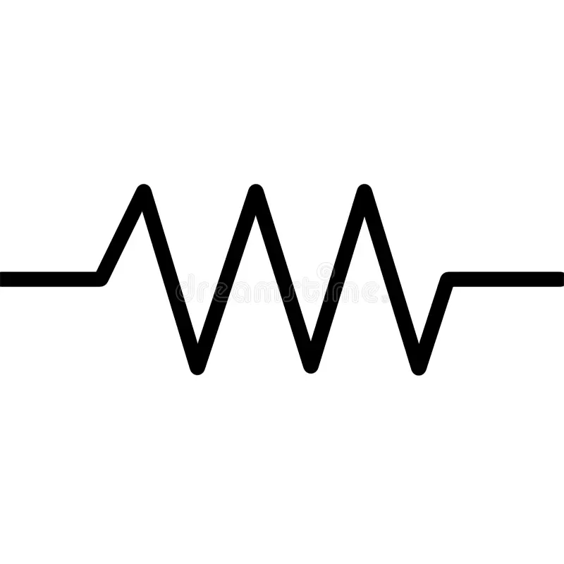
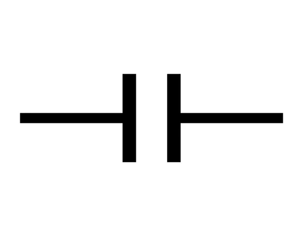
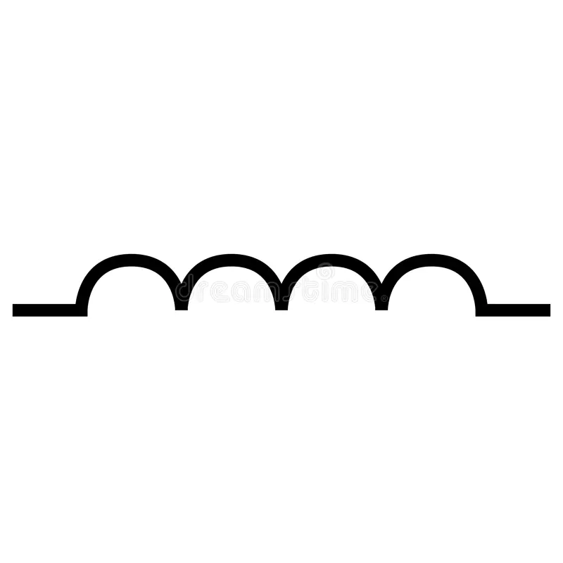
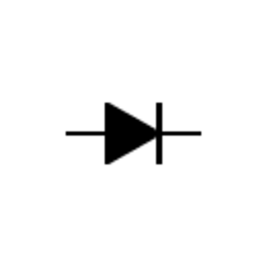

Tabla de Componentes Electrónicos
| Componente | Función | Símbolo | Unidad |
|---|---|---|---|
| Resistencia (R) | Limita o regula la corriente eléctrica en un circuito. |  | Ohmios (Ω) |
| Condensador / Capacitor (C) | Almacena y libera energía en forma de campo eléctrico; se usa para filtrar señales o acoplar circuitos. Ejemplo: Suaviza las fluctuaciones de voltaje. |
 | Faradios (F) |
| Inductor (L) | Almacena energía en forma de campo magnético cuando la corriente pasa a través de él. Uso común: En filtros y fuentes de alimentación. |
 | Henrios (H) |
| Diodo | Permite el paso de corriente en una sola dirección. Aplicaciones: Rectificadores (convertir AC a DC), protección contra polaridad inversa. |
 | — |